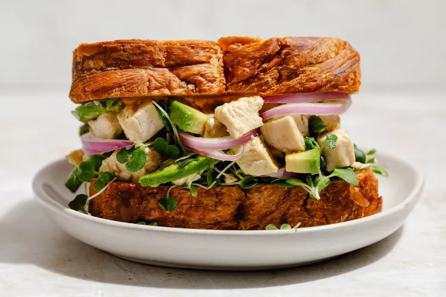

Chicken Salad

Description
Prepare this classic chicken salad recipe in just 15 minutes with only a few simple ingredients.
Ingredients
- Chicken: I most often use rotisserie chicken, but leftover chicken of almost any kind, including grilled chicken, can be used. If using canned chicken, mix all ingredients except the chicken in a bowl and then gently fold in the drained canned chicken.
- Add-ins: Since this is a classic chicken salad recipe, I add celery for crunch and green onion for flavor.
- Dressing: Mayonnaise adds a creamy texture, while simple seasonings add flavor.
Steps
- Chop cooked and cooled chicken and place into a large bowl with celery and onions.
- Mix dressing ingredients (recipe below) in a bowl. Toss with chicken.
- Serve on rolls, bread, or over a bed of lettuce.